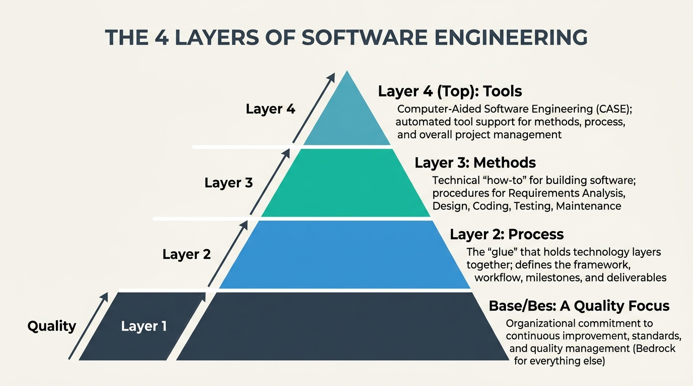

IBPS SO IT Officer · Detailed Study Notes
1. Introduction to Software Engineering
Comprehensive, point-by-point descriptive guide covering Definitions, Dual Role, Q-C-S-R Goals, Software vs Hardware (Bath-Tub Curve), Software Crisis, Brooks' Law, Myths vs Realities, and the 4-Layer Process Framework.
-
IEEE Standard 610.12 Definition:
Software Engineering is defined as "The application of a systematic, disciplined, quantifiable approach to the development, operation, and maintenance of software; that is, the application of engineering to software."
• Systematic: Planned, structured, and repeatable method rather than informal trial-and-error.
• Disciplined: Adhering strictly to established organizational standards, processes, and guidelines.
• Quantifiable: Measurable using formal metrics (e.g., LOC, Function Points, Defect Density, MTBF).
-
Fritz Bauer Definition (1968 NATO Conference):
"The establishment and use of sound engineering principles in order to obtain economically software that is reliable and works efficiently on real machines."
-
Software vs Program (Key Conceptual Distinction):
• Program: Executable source code written by an individual developer for isolated, small-scale personal use without formal documentation or testing procedures.
• Software Product: A complete, engineered package defined by the equation:
Software = Program Code + Documentation (SRS & Design) + Operating Manuals + Test Suites
(A program becomes software when engineered, documented, tested, and maintained for multi-user operational deployment).
-
Dual Role of Software:
• Software as a Product: Delivers computing potential embodied by data processor, information manager, operating system, or desktop productivity tools (e.g., Windows 11, MS Office).
• Software as a Vehicle / Infrastructure: Acts as the underlying control mechanism for delivering products (e.g., controls core banking transaction engines, telecommunication switching, air traffic control radars, medical diagnostic devices).
-
Classification of Software Products:
• Generic Products Stand-alone systems developed by a software company and sold on the open market to any customer (e.g., Antivirus, Photoshop, Databases). System specification is controlled solely by the developer.
• Customized (Bespoke) Products Software commissioned by a specific customer to meet their specific business operations (e.g., Bank Core Banking System, Airline Reservation System). System specification is controlled strictly by the customer.
🎯 The 4 Core Goals of Software Engineering (Q-C-S-R):
1. High Quality: Delivering software that strictly satisfies customer requirements, maintains clean architecture, contains minimal defects, and is maintainable over time.
2. Cost Efficiency: Optimizing development, testing, operational, and maintenance expenditure to stay strictly within the allocated budget.
3. Timely Schedule: Executing project milestones predictably to prevent schedule slippage and deliver the product within the promised delivery deadline.
4. High Reliability: Ensuring the system performs its intended functions accurately without unexpected crashes or failures over a specified period under peak load conditions.
🚨 The Software Crisis (1968 NATO Conference)
-
Historical Origin: The term Software Crisis was coined at the 1968 NATO Software Engineering Conference in Garmisch, Germany, to address severe operational difficulties encountered as computer hardware power grew rapidly while software development remained informal and chaotic.
-
Major Symptoms of Software Crisis:
• Projects running vastly over budget (often 200%–300% cost overruns).
• Projects running vastly over schedule (missing delivery dates by months or years).
• Delivered software was of low quality, plagued with bugs, and unreliable.
• Code was extremely difficult to maintain ("spaghetti code").
• Final software failed to satisfy actual customer requirements.
-
Root Causes: Reliance on ad-hoc "code and fix" techniques, lack of formal requirement analysis, ignoring structural design planning, absence of estimation models, and lack of systematic software testing.
📌 Brooks' Law (The Mythical Man-Month - Fred Brooks):
"Adding manpower to a late software project makes it later."
Detailed Explanation:
1. New developers require existing productive developers to stop coding and train them (ramp-up & learning curve lag).
2. Inter-personnel communication channels grow exponentially according to the formula:
Communication Channels = N(N - 1) / 2
When team size increases from $N$ to $N+M$, communication pathways explode, generating massive coordination overhead that slows down progress even further.
💬 Software Myths vs Realities (High-Yield Exam Matrix)
| Category / Role |
Software Myth (False Belief) |
Engineering Reality (Factual Truth) |
| Management Myth 1 |
We have books full of company standards and procedures; my team has all the guidance needed. |
Books are rarely read, updated, or enforced. Most developers are unaware of their contents and write code ad-hoc. |
| Management Myth 2 |
If we fall behind schedule, we can add more programmers to catch up quickly. |
Brooks' Law: Adding manpower to a late software project makes it later due to training lag & communication channel overhead. |
| Customer Myth 1 |
A general statement of objectives is enough to start coding; details can be added later. |
Ambiguous requirements lead to project failure. Formal Requirement Engineering (SRS) is mandatory before coding. |
| Customer Myth 2 |
Software is flexible; requirement changes can be easily incorporated anytime later. |
Cost of requirement change increases exponentially as the project progresses through SDLC (Requirements $\rightarrow$ Design $\rightarrow$ Coding $\rightarrow$ Testing $\rightarrow$ Maintenance!). |
| Practitioner Myth 1 |
Once the code is written and compiles successfully, our development job is finished. |
Between 60% and 80% of total software lifecycle effort occurs after delivery during the Maintenance phase. |
| Practitioner Myth 2 |
The only deliverable work product for a successful project is the executable program. |
Documentation, test suites, SRS, architectural models, user manuals, and maintenance logs are vital deliverables. |
-
Software Process Definition: A structured set of activities, actions, and tasks required to specify, design, construct, test, deploy, and maintain high-quality software.
🔺 The 4 Layers of Software Engineering (Pyramid Architecture)
4. TOOLS (Automated & Semi-Automated CASE Tool Support)
3. METHODS (Technical "How-to" for Requirements, Design & Testing)
2. PROCESS (The Glue holding all technology layers together)
1. A QUALITY FOCUS (The Bedrock / Foundation Layer)

Figure 1.2: The 4 Layers of Software Engineering Pyramid Architecture
- 1. A Quality Focus (Foundation Layer): Any engineering approach must rest on an organizational commitment to total quality management (TQM), SQA, and continuous process improvement.
- 2. Process (The Glue): Forms the framework that holds technology layers together, enabling timely, rational development and providing management control over milestones.
- 3. Methods (Technical How-to): Provide technical "how-to's" for building software, covering requirements elicitation, analysis modeling, architecture design, algorithmic coding, and testing.
- 4. Tools (Automated Support): Provide automated or semi-automated tool support for process and methods (Computer-Aided Software Engineering - CASE tools).
🛠️ The 5 Core Framework Activities
- 1. Communication: Heavy customer and stakeholder collaboration, requirement gathering, and elicitation sessions (interviews, JAD).
- 2. Planning: Defining technical strategy, project estimation (cost, effort via COCOMO/FP), scheduling (Gantt/PERT), risk analysis, and resource tracking.
- 3. Modeling: Creation of Analysis Models (SRS, DFD, ERD) and Design Models (Software Architecture, Data Structures, User Interface).
- 4. Construction: Code generation (programming) and software testing (Unit testing & Integration testing to uncover defects).
- 5. Deployment: Software delivery to customer, operational installation, client acceptance testing, feedback collection, and maintenance support.
☔ 7 Core Umbrella Activities (Cross-Cutting Across SDLC)
Umbrella activities run continuously across all 5 framework activities throughout the project lifecycle:
- 1. Software Quality Assurance (SQA): Audits, reviews, and process inspections ensuring strict compliance with quality standards (ISO 9000, CMM).
- 2. Software Configuration Management (SCM): Managing changes across code repositories, version control, baselines, and tracking change requests.
- 3. Risk Management: Assessing, projecting, and mitigating risks that could impact product quality or project completion (RMMM Plan).
- 4. Formal Technical Reviews (FTRs): Peer code walkthroughs and inspections to detect defects early before propagation.
- 5. Software Project Tracking & Control: Assessing project progress against schedule milestones and taking corrective action on variances.
- 6. Reusability Management: Defining reusable software components, libraries, design patterns, and microservices.
- 7. Work Product Preparation & Documentation: Standardizing user manuals, technical documentation, and test reports.
🔥 Section 1 Rapid Exam Recall & Formula Summary:
• Q-C-S-R Goals: Quality, Cost, Schedule, Reliability.
• Software Equation: $\text{Software} = \text{Program Code} + \text{Documentation} + \text{Manuals} + \text{Test Suites}$.
• Bath-Tub vs Deterioration Curve: Hardware wears out physically; Software deteriorates logically due to change side-effects.
• Brooks' Law: Adding manpower to late project makes it later; $\text{Communication Channels} = \frac{N(N-1)}{2}$.
• 4 Engineering Layers: Quality Focus (Base) $\rightarrow$ Process $\rightarrow$ Methods $\rightarrow$ Tools (Top).
• 5 Framework Activities: Communication $\rightarrow$ Planning $\rightarrow$ Modeling $\rightarrow$ Construction $\rightarrow$ Deployment.
• Umbrella Activities: SQA, SCM, Risk Management, FTRs, Project Tracking, Reusability, Work Product Prep.